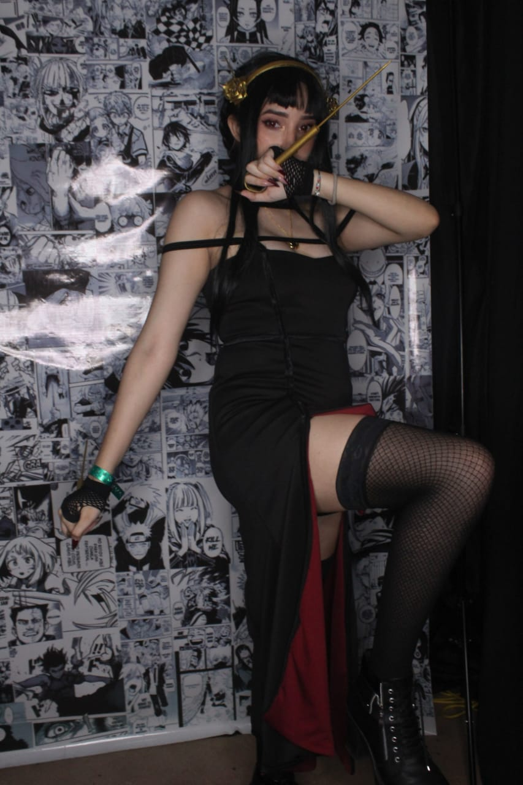

Feliz Cumple Polly
Felices 18 ❤️
Nota: Pasa el mouse por las secciones en blanco para descubrir los mensajes
Hola, mi Polly 😎
Yo quise hacer mi propio diseño para desearle un feliz cumple como se que te ecanta Maki Zenin Pues me inspire en eso espero que te guste. PD: Yo se que no esperaba algo de esto menos por mi, pero es mi detalle para ti espero que te guste y sabes que te quiero mucho espero que lo diisfrute❤️.
Este año has conseguidos demasiado cosas buenas espero seguir acompañarte en tus logros.
🙊
Te han vuelto en unas de las persona más importante que tengo en mi vida,la cual hemos compartido muchas aventuras y las que faltas, Me enseña que todavia hay alguien que todavia quiere esta pequeña persona rota que te esta escribiendo esto y tu me ayuda a estar mejor cuando se que no te gusta los abrazos tu haces un esfuerzo porque sabes que lo necesito siempre te voy a querer. La mejor decision fue conocerte en esa geek ahora ya tenemos un año conociedonos como pasa el tiempo ahhh 😎 eres una persona especial que siempre tendra tu Fan n1.
Muy feliz cumple😎❤️
🙈
Espero que este año esté lleno de sorpresas y regalos, que nos podamos ver mas, que te llene de cosplay, Sobre todo que seas muy felices mas en tu cumple fue buen momento verte feliz comiendo esa parilla por mas momento asi,le mando un fuerte abrazo espero compratir mas momento contigo.Iroiro arigato gozaimashita
Te mereces todo lo mejor
🙉
Sólo queda decirle que muchísimas gracias por todo lo que has hecho por este ser, mi Polly. espero siempre poder estar con contigo siempre me tendra para cuidarte y hacer posible tus sueños. ,Tus palabras e cariño siempre son una ayuda cuando estoy mal. Eres unas persona importante para mi cuando tu mama te diga cosas fea no es es asi eres una persona inteligente y la mejor que bendicion cuando fuiste invitada , y una bendición para mí estar compartiendo momentos con ustedes y mas cuando fuiste invitada. Muchísimas Gracias a por todo, mi Polly,Este año espero verte tu cosplay soñado . Los quiere Mucho su amigo-Mañager Juan 🙉.
Por último gracias por estos: